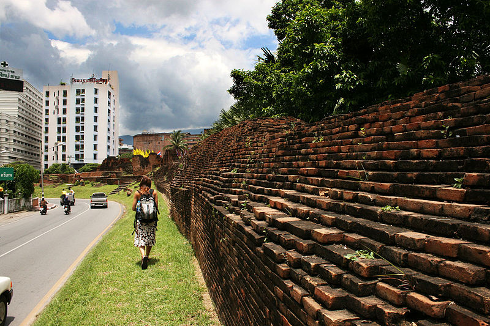

치앙마이
치앙마이(태국어: เชียงใหม่ 치앙마이[*])는 태국 북부에서 가장 크고 문화적으로 중요한 도시이자 치앙마이 주의 주도이다. 방콕에서 북쪽으로 700km 떨어진 차오프라야 강의 지류인 삥 강 기슭에 있다.
최근에 치앙마이는 점점 더 현대적인 도시가 되었고 매년 약 100만 명의 관광객을 불러모으고 있다.
2006년 5월에는 아세안과 +3국(대한민국, 중국, 일본)간의 치앙마이 이니셔티브가 체결되어 정치적으로 중요성을 얻게 되었다. 치앙마이는 핑 강과 주요 교역로상의 전략적인 위치에 있어 역사적으로 중요한 곳이었다. 도시는 수공예품, 우산, 보석과 목조의 중심지이다.
도시 치앙마이의 면적은 40.216km2, 인구는 148,477명(2008)에 불과하다. 그러나 주변 지역을 포함한 치앙마이 도시권의 면적은 2,905km2, 인구는 960,906명(2008)에 달한다.